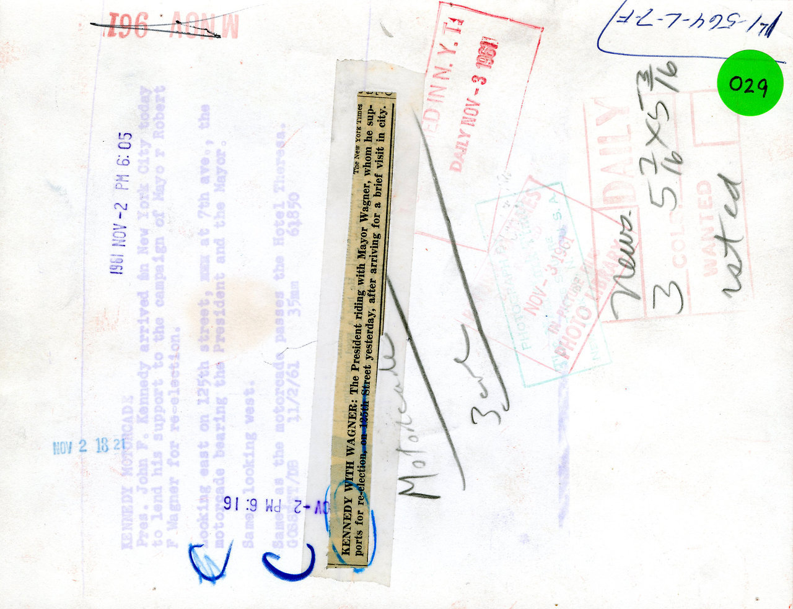

Nov. 2, 1961: President John F. Kennedy in a motorcade on 45th Street, rallying New Yorkers to reelect the incumbent, Robert F. Wagner, to a third term. Though the procession drew cheers, according to The Times, Mayor Wagner’s Republican opponent, Attorney General Louis J. Lefkowitz, was not impressed: “Not even President Kennedy’s effusive praise can reverse the tide that is flowing against the Mayor under whose administration New York has become the worst governed city in America,” Mr. Lefkowitz said. Mayor Wagner went on to win that third term, beating Mr. Lefkowitz by nearly 400,000 votes. Photo: Carl T. Gossett/The New York Times